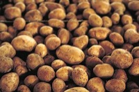

じゃがいもの生産量 都道府県ランキング
全16都道府県の順位と収穫量
じゃがいもの収穫量が全国で最も多いのは北海道で、187万 tです。全国（229万5,000 t）の81%を占めます。

| 順位 | 都道府県 | 収穫量 | 全国に占める割合 |
|---|---|---|---|
| 1位 | 北海道 | 187万 t | 81% |
| 2位 | 鹿児島県 | 8万1,700 t | 3.6% |
| 3位 | 長崎県 | 7万3,600 t | 3.2% |
| 4位 | 茨城県 | 4万9,700 t | 2.2% |
| 5位 | 千葉県 | 2万7,100 t | 1.2% |
| 6位 | 熊本県 | 1万3,300 t | 0.6% |
| 7位 | 福島県 | 1万2,600 t | 0.5% |
| 8位 | 青森県 | 1万2,500 t | 0.5% |
| 9位 | 長野県 | 1万2,400 t | 0.5% |
| 10位 | 静岡県 | 1万200 t | 0.4% |
| 11位 | 宮崎県 | 7,410 t | 0.3% |
| 12位 | 広島県 | 6,760 t | 0.3% |
| 13位 | 宮城県 | 6,120 t | 0.3% |
| 14位 | 佐賀県 | 3,060 t | 0.1% |
| 15位 | 三重県 | 2,160 t | 0.1% |
| 16位 | 岡山県 | 1,580 t | 0.1% |
PR

じゃがいもの生産量の推移（令和2年産〜令和6年産）
全国の収穫量は、令和2年産の220万5,000 tから令和6年産の229万5,000 tへ、4%増えました。期間中、1位は一貫して北海道です。
| 年 | 全国 | 1位 | 2位 | 3位 |
|---|---|---|---|---|
| 令和6年産 | 229万5,000 t | 北海道187万 t | 鹿児島県8万1,700 t | 長崎県7万3,600 t |
| 令和5年産 | 236万4,000 t | 北海道191万6,000 t | 長崎県8万5,000 t | 鹿児島県8万3,900 t |
| 令和4年産 | 228万3,000 t | 北海道181万9,000 t | 鹿児島県9万7,600 t | 長崎県8万3,900 t |
| 令和3年産 | 217万5,000 t | 北海道168万6,000 t | 鹿児島県9万1,000 t | 長崎県8万1,800 t |
| 令和2年産 | 220万5,000 t | 北海道173万3,000 t | 鹿児島県8万5,400 t | 長崎県8万4,600 t |
この数字について
- 分類：ナス科
- 全国の収穫量：229万5,000 t
- この数字が表すもの：収穫量（収穫された重量）
- 調査：作物統計調査 作況調査（野菜） 令和6年産
- 16県分を調査（調査していない県は順位に入りません）
じゃがいもの生産量について、よくある質問
- じゃがいもの生産量が日本一の都道府県はどこですか？
- 北海道です。作物統計調査 作況調査（野菜）（令和6年産）で187万 tでした。
- じゃがいもの生産量ランキング2位・3位はどこですか？
- 2位は鹿児島県（8万1,700 t）、3位は長崎県（7万3,600 t）です。
- じゃがいもの生産量ランキング4位・5位はどこですか？
- 4位は茨城県（4万9,700 t）、5位は千葉県（2万7,100 t）です。じゃがいもの全16県の順位は上の表のとおりです。
- じゃがいもの全国の生産量はどれくらいですか？
- 229万5,000 t（令和6年産）です。